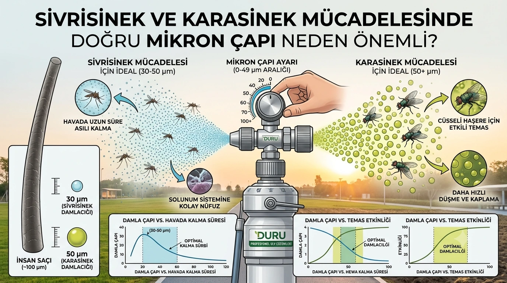

Mikron Çapı Nedir, Neden Önemlidir?
Sivrisinek ilaçlama uygulamalarında en sık göz ardı edilen ama en kritik teknik detay, damlacık çapının (mikron) doğru ayarlanmasıdır. Mikron, bir zerreciğin boyutunu ifade eder ve "µm" simgesiyle gösterilir; 1 milimetre 1000 mikrona eşittir. Karşılaştırma yapmak gerekirse, bir insan saç teli yaklaşık 100 mikron kalınlığındadır — bu da ULV cihazlarının ürettiği zerreciklerin gözle görülemeyecek kadar küçük olduğunu gösterir.
Sivrisinek İçin İdeal Mikron Aralığı
Sivrisinek gibi küçük, hafif haşerelere karşı mücadelede, genellikle daha ince damlacıklar (yaklaşık 30-50 mikron civarı) tercih edilir. Bu boyuttaki zerrecikler havada daha uzun süre asılı kalır, sürüklenme yoluyla geniş bir alana yayılır ve sivrisineğin solunum sistemine kolayca nüfuz eder.

Karasinek İçin Neden Daha Büyük Mikron Gerekir?
Karasinek, sivrisineğe göre daha büyük ve cüsseli bir haşeredir. Bu nedenle, karasinek mücadelesinde etkili sonuç almak için damlacık boyutunun büyütülmesi gerekir. Çok ince damlacıklar, daha büyük ve güçlü uçuşa sahip karasinekler üzerinde sivrisinek kadar etkili temas sağlamayabilir; bu yüzden ULV cihazının ayarlanabilir mikron özelliği büyük önem taşır.
Yanlış Mikron Ayarının Sonuçları
Eğer mikron ayarı hedef haşereye uygun yapılmazsa, hem ilaç israfı yaşanır hem de istenen etkinlik elde edilemez. Çok ince damlacıklar, rüzgârlı koşullarda hedef alandan uzaklaşarak boşa harcanabilirken, çok kaba damlacıklar yeterince geniş alana yayılamayabilir veya havada yeterince uzun süre asılı kalamayabilir.
Profesyonel ULV Cihazlarında Mikron Ayarı Nasıl Yapılır?
Duru'nun araç üstü ve el tipi ULV makinelerinin çoğunda, mikron ayar vanası veya elektronik kontrol sistemi aracılığıyla 0–49 mikron aralığında hassas ayar yapılabilir. Bu, operatörün aynı cihazla hem sivrisinek hem karasinek mücadelesinde optimum sonuç almasını sağlar. Doğru mikron ayarının yanı sıra, kullanılan ilacın formülasyonu (sc, ec, wp) ve hava koşulları (rüzgâr hızı, nem) da uygulamanın etkinliğini doğrudan etkiler.